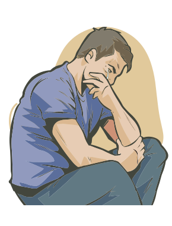

Medo e ansiedade constituem as primeiras respostas naturais de defesa em face de uma ameaça potencial. Pressentir o perigo é considerada uma habilidade evolucionária para a sobrevivência. Os indivíduos com transtorno de ansiedade sentem-se “em perigo” a todo instante, não sendo capazes de desfazer essa percepção, mesmo em momentos em que não há ameaça.
Ansiedade é uma resposta orgânica normal, fisiológica. Caracteriza-se por ativação física (tensão, taquicardia, taquipneia, tremores) associada a sensações de medo ou apreensão. Os medos ditos “normais” são, portanto, reações fisiológicas a ameaças externas. Nesse caso, a reação é apropriada e aumenta a capacidade de se sobreviver à ameaça.
Por outro lado, os transtornos de ansiedade são diferentes de ansiedade (medo) normal, embora os sintomas possam ser semelhantes. Nos transtornos de ansiedade, os sintomas surgem sem que haja uma ameaça externa real ou óbvia, ou ainda quando a reação é desproporcionalmente mais intensa e excessiva.
Quando sintomas de ansiedade ou medo estão presentes e acompanhados por prejuízo na qualidade de vida, deve-se considerar o diagnóstico de um transtorno de ansiedade. Esses transtornos apresentam características e intensidade variáveis, desde formas leves (medo de insetos, de altura, de trovões) até quadros crônicos incapacitantes (transtorno de pânico, transtorno obsessivo-compulsivo).
